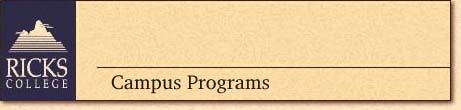

| Rexburg, recently named one of the best small communities in America, lies 30 miles northeast of Idaho Falls in the historic Snake River Valley. Founded in 1888, Ricks College is the nation’s largest private two-year college. Apartment style housing adjacent to campus or on campus. Each has 3 double occupancy bedrooms with shared common living room. Maximum of 1 couple or 3 singles, (unlimited singles, no charge) in each apartment. Private bath for couple or 3 singles share 1 bath. First and second story. Classrooms and cafeteria are a moderate walk from rooms. Two nice, low-cost golf courses nearby. Ricks College standards require abstinence from coffee and tea while on campus. No alcohol allowed; smoking prohibited. Bus: Y Plane: Y Train: N Ferry: N | |
| BIG BANDS | |